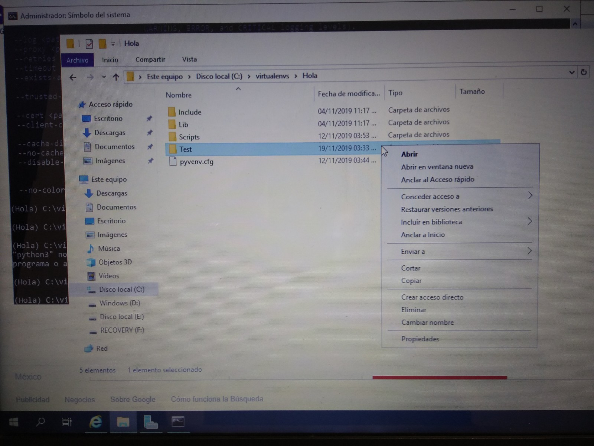
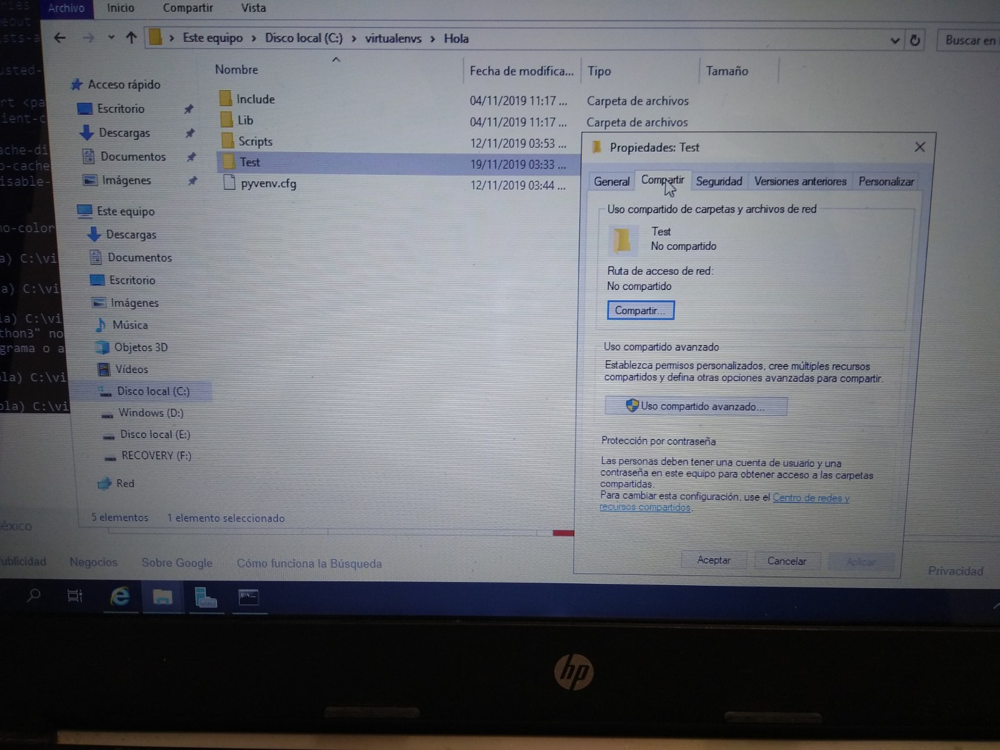
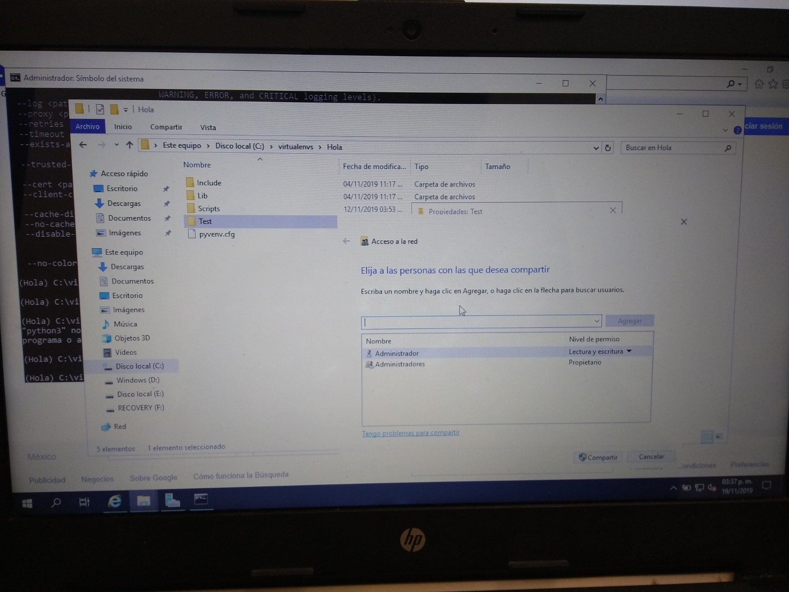
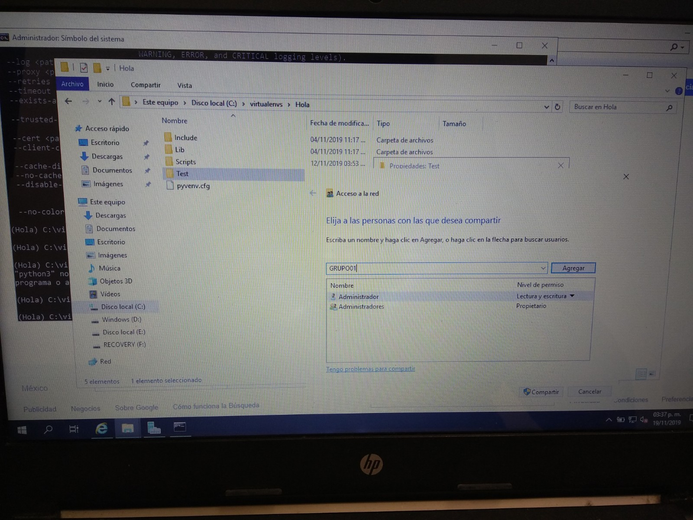
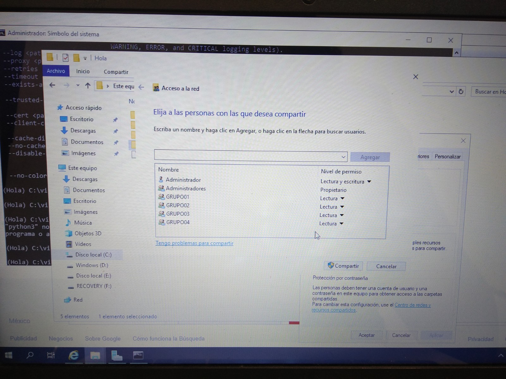
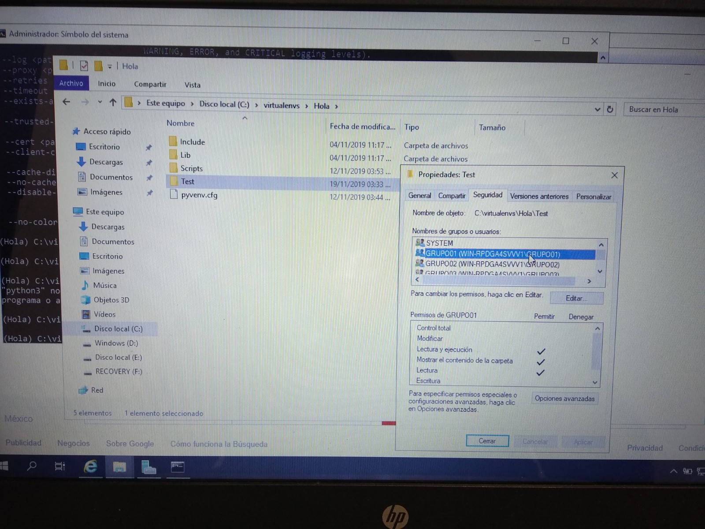
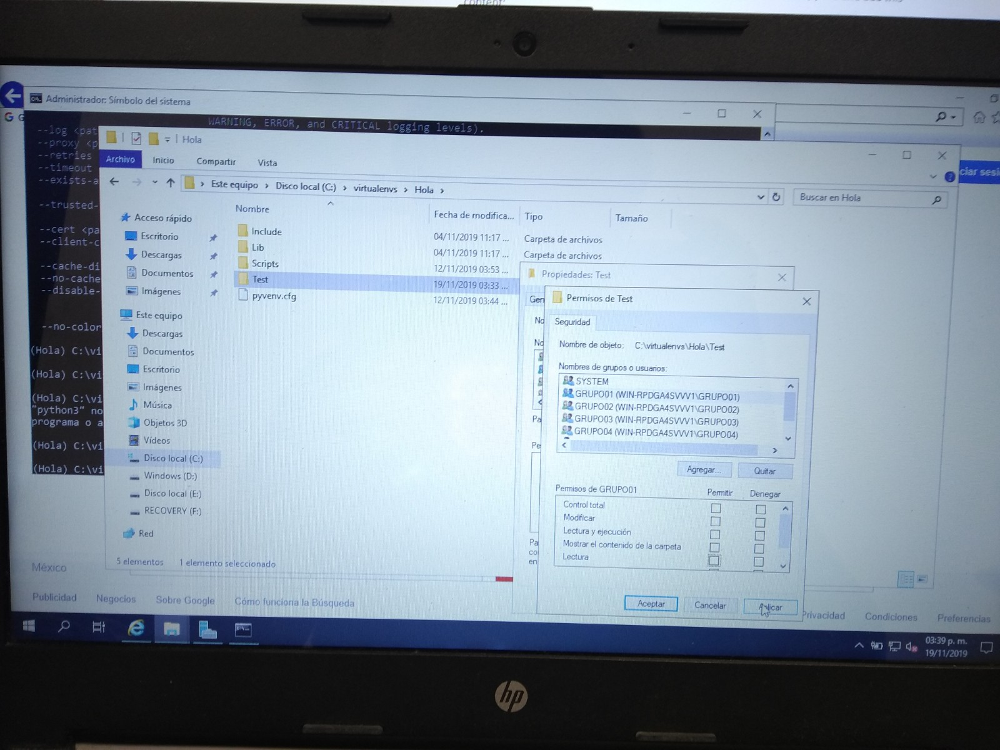

Django
Para la creación de un proyecto en Django puedes encontrar un tutorial en el siguiente
Una vez creado el proyecto, lo pondremos en la raiz del disco de nuestro sistema operativo. Daremos click derecho en la carpeta y daremos click en "Propiedades"

Una vez se nos abrió la ventana, vamos a la pestaña de "Compartir" y damos click en el botón de "Compartir"

Ya que se nos abrió la nueva ventana, vamos a escribir el nombre de los grupos a los cuales le daremos acceso

Una vez hayamos escrito todos los nombres, se nos enlistarán en la parte de abajo. Daremos click en "Compartir"

Ahora nos vamos a la pestaña de "Seguridad" y damos click en "Editar"

Nos aparecerá un listado de los grupos a los que tiene acceso junto con una lista en la parte de abajo de lo que se puede o no hacer, si solo queremos que sea de lectura, deshabilitamos las otras casillas
Listo, ya tenemos nuestro proyecto compartido a diferentes grupos de usuario dentro de Windows Server